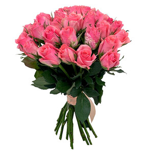

|  | «Розовые кенийские розы». Букет роз |
| Состав: розы розовые 40-50 см с небольшим бутоном (кения или россия) - 15 шт, лента, , диаметр: 10-15 см, высота: 40-50 см | |
| Букет соберут в день доставки, только из свежих цветов. И затем с улыбкой вручат получателю. | |
| 3 760 ₽ | |
| Описание: Букет из невысоких розовых роз - это нежность и романтика в одном флаконе. Он наполнен легкостью и чувственностью, подобно облачку в теплом летнем воздухе. Такой букет прекрасно подойдет для подарка любимой девушке или для создания романтической атмосферы в доме. | |